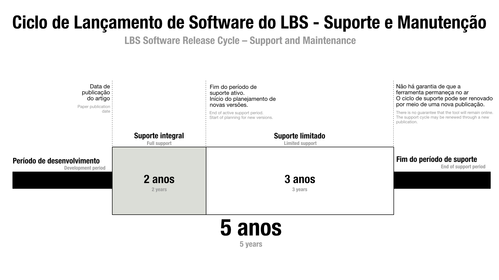

Política de Software LBS-SRC
Ciclo de Lançamento de Software Acadêmico
Este documento estabelece as diretrizes para a política de software e para o ciclo de lançamento de software (Software Release Cycle – SRC) acadêmico produzido por membros e colaboradores do Laboratório de Bioinformática e Sistemas (LBS) da Universidade Federal de Minas Gerais (UFMG), Brasil, e por grupos parceiros. Estas boas práticas foram estabelecidas em conformidade com as recomendações e os requisitos de publicação adotados por periódicos acadêmicos das áreas de bioinformática, ciência da computação e ciências biológicas.
Versão: 1.26.825

Toda ferramenta desenvolvida no âmbito do LBS terá um ciclo de vida de cinco anos, contado a partir da data de publicação do artigo associado à ferramenta. Esse período compreende dois anos de suporte integral, prestado pelos autores do artigo, e três anos de suporte estendido, prestado pela equipe de TI do LBS.
Durante os dois primeiros anos após a publicação do artigo, os desenvolvedores originais da ferramenta e os coautores do artigo comprometem-se a garantir seu funcionamento e a prestar suporte aos usuários. O suporte integral inclui correções de segurança, correções de erros, modificações de interface e suporte geral aos usuários.
O período de suporte estendido será prestado principalmente pela equipe do LBS e pode não contar com a participação dos desenvolvedores originais da ferramenta. Nesse período, o suporte será limitado à manutenção da disponibilidade e acessibilidade da ferramenta aos usuários. Correções relacionadas aos resultados produzidos pela ferramenta, novas funcionalidades e alterações metodológicas não estão contempladas no suporte estendido.
Caso sejam necessárias alterações mais significativas na ferramenta, uma nova versão deverá ser lançada. O período de suporte será renovado a partir da publicação de um novo artigo associado à nova versão da ferramenta. A participação dos autores originais não é obrigatória; entretanto, recomenda-se que sejam convidados a contribuir para o desenvolvimento da nova versão.
Todo software produzido por membros ou colaboradores do LBS está sujeito a estas diretrizes.
Licença
Exceto quando expressamente indicado em contrário, todo software produzido pelo LBS será disponibilizado com código-fonte aberto sob a licença MIT (https://opensource.org/license/mit). A documentação e os demais materiais suplementares serão disponibilizados sob a licença Creative Commons Attribution 4.0 International (CC BY 4.0), disponível em https://creativecommons.org/licenses/by/4.0.
Versionamento
O controle de versões da ferramenta deve seguir o padrão:
X.YY.MMDD
em que:
- X corresponde à versão principal da ferramenta e está associada ao artigo que descreve a versão publicada;
- YY corresponde aos dois últimos dígitos do ano;
- MM corresponde ao mês, representado por um ou dois algarismos, sem zero à esquerda (ex.: agosto = 8);
- DD corresponde ao dia, sempre com dois algarismos, incluindo zero à esquerda quando necessário (ex.: dia 4 = 04).
Versões de desenvolvimento e versões publicadas
Durante o desenvolvimento, devem ser utilizadas as versões 0.YY.MMDD, tanto para versões alfa, destinadas a testes pelos desenvolvedores, quanto para versões beta, destinadas a testes pelos usuários.
Após a publicação do artigo que apresenta a ferramenta, a versão principal deve ser atualizada para 1. Assim, a primeira versão publicada seguirá o padrão 1.YY.MMDD. Por exemplo, a versão 1.26.825 corresponde à primeira versão estável publicada em 25 de agosto de 2026.
A versão principal só deve ser incrementada para 2, 3 e assim sucessivamente quando houver a publicação de um novo artigo diretamente relacionado à ferramenta.
Uma nova versão principal não deve ser criada durante o período de suporte integral da versão anterior, definido como os dois anos seguintes à publicação da ferramenta.
Além disso, uma nova publicação deve ser justificada pela introdução de novas funcionalidades ou por mudanças substanciais na ferramenta. Uma nova publicação não deve ser realizada exclusivamente para atualizar os dados.
Atualizações de dados
Quando uma atualização resultar exclusivamente na atualização dos dados, sem alterações nas funcionalidades ou na versão principal da ferramenta, X deve permanecer inalterado. Nesse caso, somente a identificação temporal YY.MMDD deve ser atualizada. Dessa forma, alterações nos dados não implicam uma nova versão principal nem uma nova publicação.
Autoria, propriedade e identificação
A marca do software deve ser atribuída à entidade Laboratório de Bioinformática e Sistemas (LBS), UFMG, Brasil. A propriedade de cada versão publicada do software é atribuída, em ordem de importância: (1) ao primeiro autor da versão ou, quando aplicável, igualmente ao grupo de autores atribuídos com o mesmo nível de contribuição; (2) ao supervisor do projeto, identificado como último autor; e (3) aos demais autores colaboradores. Dessa forma, novas versões podem possuir atribuição de propriedade distinta das versões anteriores, de acordo com os autores e as contribuições associados à respectiva versão.
Novas versões podem ser desenvolvidas por outros grupos de pesquisa, desde que expressamente autorizadas pelo último autor (supervisor do projeto). Entretanto, cada nova versão do software deve incluir a licença LBS-SRC, bem como os respectivos avisos de copyright. O aviso deve preservar o ano de criação, o nome do software e as informações do laboratório, seguido do aviso correspondente à versão atual, contendo o ano, o nome da ferramenta, a versão, os autores e, quando disponível, um link para o DOI. Por exemplo:
© 2026 SIGNA v1.26.825 | Diego Mariano et al.
Essa formulação deixa explícita a distinção:
- LBS → proprietário da marca
- Versão 1 → autores da versão 1
- Versão 2 → autores da versão 2
- Versão 3 → autores da versão 3
E assim sucessivamente.
Recomendação (não obrigatória). Quando houver registro de software, a participação deverá ser distribuída da seguinte forma: 51% para o primeiro autor, 10% para o último autor (supervisor do projeto) e os 39% restantes para os demais autores e instituições participantes.